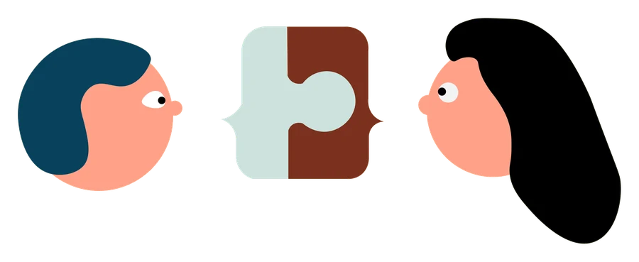
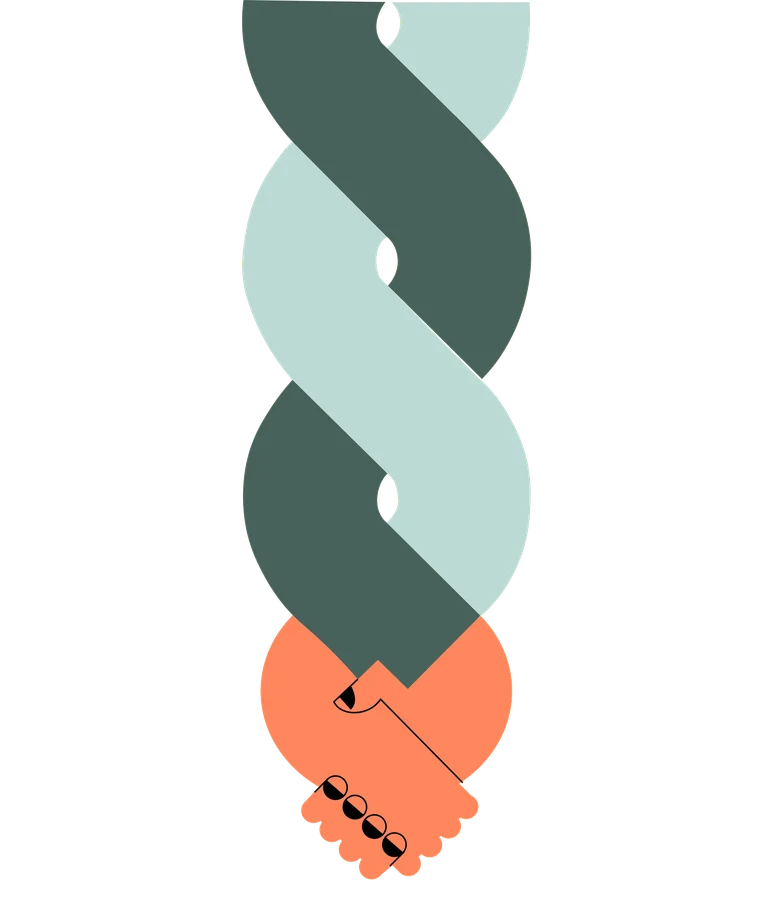
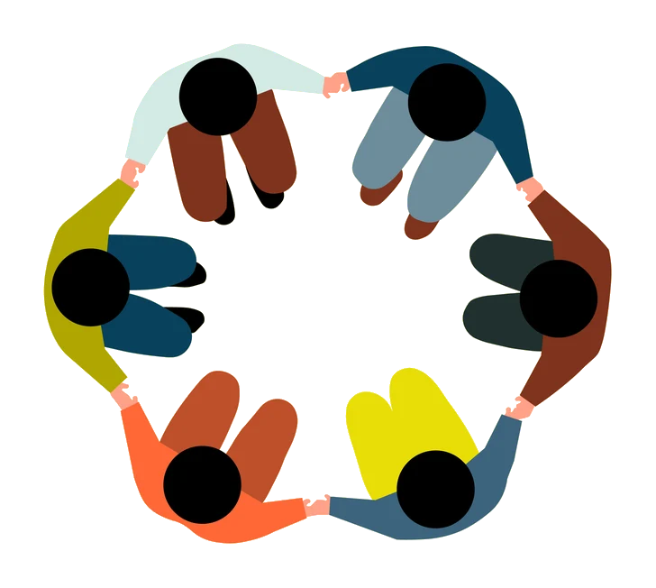

Lección 1.1
Unidad 1
Bases conceptuales y marco jurídico de la justicia restaurativa
Presentación de la unidad · Recursos académicos y referencias · Aviso de finalización
Lección 1.2
El conflicto y el contexto
Lección 1.3
Actores de la justicia restaurativa
Lección 1.4
Fases y grados de participación de la justicia restaurativa

Unidad 2
Aplicación jurídica de la justicia restaurativa en el proceso penal
Presentación de la unidad · Recursos académicos y referencias · Aviso de finalización
Lección 2.1
Marco jurídico aplicable a los mecanismos e instituciones jurídico- procesales relacionadas con la justicia restaurativa
Abrir la lección Fin de la lección
- Figura 1. Trámite de la mediación figura
- Figura 2. Procedimiento mediación figura
- Figura 3. Mecanismos de justicia restaurativa figura
- Figura 4. Actuaciones susceptibles de aplicación del enfoque restaurativo figura
- Figura 5. Fundamentos sobre la procedencia de la Suspensión del procedimiento a prueba figura
- Figura 6. Enfoque restaurativo e instituciones o figuras procesales figura
- Figura 7. Perspectiva transversal del enfoque restaurativo del proceso penal figura
Lección 2.2
Criterios para valorar la procedencia de mecanismos o instituciones relacionadas con el enfoque restaurativo

Unidad 3
Implementación de la justicia restaurativa
Presentación de la unidad · Recursos académicos y referencias · Aviso de finalización
Lección 3.1
Roles y responsabilidades de los actores institucionales
Lección 3.2
Gestión del proceso restaurativo
Lección 3.3
Seguimiento y evaluación de los procesos restaurativos
Lección 3.4
Buenas prácticas y desafíos en la implementación

Unidad 4
Plan de justicia restaurativa
Presentación de la unidad · Recursos académicos y referencias · Aviso de finalización
Lección 4.1
Identificación de los elementos y las categorías propias de un plan de justicia restaurativa (daño, impacto, expectativa, necesidad y propuesta de reparación)
Lección 4.2
Construcción participativa del plan restaurativo
Lección 4.3